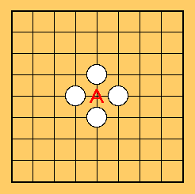
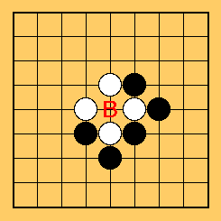
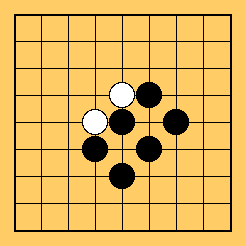

Você pode jogar em quase todos os lugares do tabuleiro.
Entretanto, há alguns lugares onde as regras impedem a jogada.
Pretas não podem fazer um movimento para A. (Brancas podem.)
Pois, se as pretas jogarem lá, aquela pedra já estaria cercada.
Suicídio não é permitido no Go.
Entretanto, pretas podem jogar em B.
Com uma pedra preta em B, as duas pedras brancas seriam cercadas e capturadas. (Veja a figura abaixo.)
 Próximo
Próximo
 Conteúdo
Conteúdo